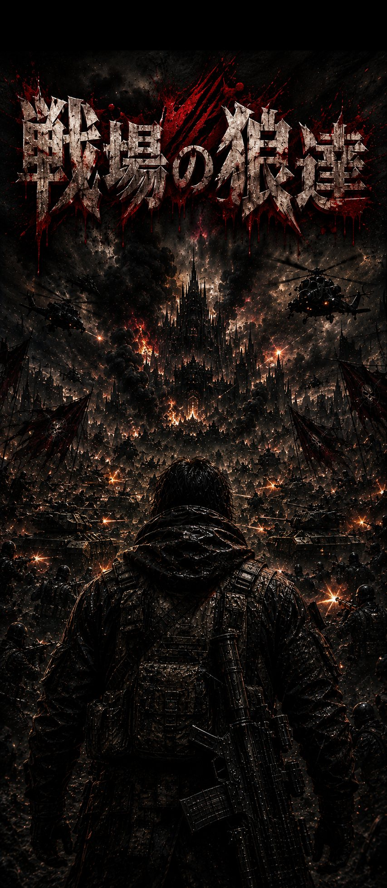

戦場の狼達
5人のボスを撃ち抜く、トップダウン・ボスラッシュシューター
完全無料 / アプリ内課金なし
ブラウザでいますぐ遊ぶ
どんなゲームか
見下ろし視点の戦場で、銃・斬撃・爆弾を使い分けてボスと撃ち合う対戦アクションです。1体のボスにつき3本先取の連戦。ラウンドを取るたびにルーレットが回り、レーザー砲や分身といった強化アイテムが手に入ります。
ボスとボスのあいだにはザコ襲来のミニゲームが挟まります。押し寄せる群れを10体倒しきれば次の面へ、倒しきれなければそこで物語は終わりです。
5人のボス、それぞれの必殺技
- 1面 見習い兵士 ／ がむしゃら乱射 — 扇状に9発をばらまく。狙いは粗く、ここで基本の立ち回りを覚える。
- 2面 歴戦の傭兵 ／ 制圧掃射 — 速い一団と広い一団を重ねた、統制のとれた8発。真正面は通れない。
- 3面 精鋭部隊長 ／ 二連乱射 — 1面のばらまきを2連続。2発目は撃ち直しで狙い直してくるので、まっすぐ逃げると2発目に刈られる。
- 4面 血刃の暗殺者 ／ 瞬影 — 背後へ瞬間移動して斬る。斬撃力1.2倍の接近型で、間合いに入られる前に削りきりたい。
- 5面 戦場の覇者 ／ 覇王弾幕 — 全方位16発のリング。安全なのは弾と弾の隙間だけ。
そして5面を制した者の前にだけ現れる隠しボス「戦神」／ 神威。全方位20発の大型弾リングと、狙い澄ましたレーザーを同時に撃ってきます。
技を出す直前、ボスの体が光ります。その瞬間に横へ回り込めば、ほとんどの必殺技はかわせます。
クリアしたあとも遊べる
- 2人協力プレイ — 部屋コードで合流し、2人でボスに挑めます。
- ハードモード — 全3ステージ、ボスが2体同時(1面＋2面 → 3面＋4面 → 5面＋戦神)。あいだのザコ戦も20体に増えます。
- 隠しEXボス「戦神」 — 5面クリア後のエンディング画面から挑めます。
- 実績バッジ15種 — うち3つは条件を伏せた隠し実績です。
- 撃破タイム記録 — 各面と通しのベストタイムが残ります。
- 今日の挑戦 — 日替わりのお題と、連続達成日数。
広告について
表示されるのはリワード動画広告のみです。ユーザーが自分でボタンを押したときにだけ再生され、プレイを妨げるバナー広告や全面広告はありません。
広告を一度も見なくても、すべてのステージ・モード・記録機能を最後まで無料で遊べます。動画は「負けた場面からやり直す」「ハズレのルーレットを引き直す」という任意の救済としてだけ用意しています。
遊ぶのに必要なもの
本作は1人プレイを含むすべてのモードをサーバー上で処理しているため、プレイ中はインターネット接続が必要です。その日の1回目の起動だけ、サーバーの起動待ちで最大1分ほどかかることがあります。
操作
- スマートフォン: 画面に触れたところにスティックが現れて移動、右下のボタンで射撃・斬撃・爆弾。
- パソコン: WASD / 矢印キーで移動、クリックまたはスペースで連射、Qで斬撃、Eで爆弾設置、Fで起爆。